Beräknad nästa flytt: december 2026
Växjö - Oktober 2025
Bostadstyp: Villa
Områdets byggperiod: 1930- och 1940-tal
Boarea: 172 m²
Uppskattat värde: 2,300,000 - 3,600,000 SEK
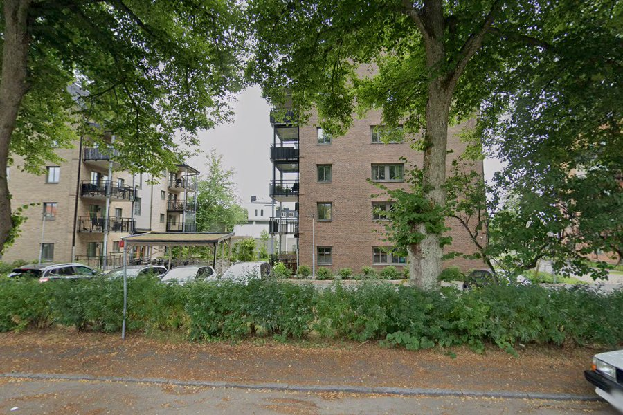
Växjö - September 2025
Bostadstyp: Flerbostadshus
Områdets byggperiod: 2000-tal
Boarea: Ej tillgängligt
Uppskattat värde: Ej tillgängligt
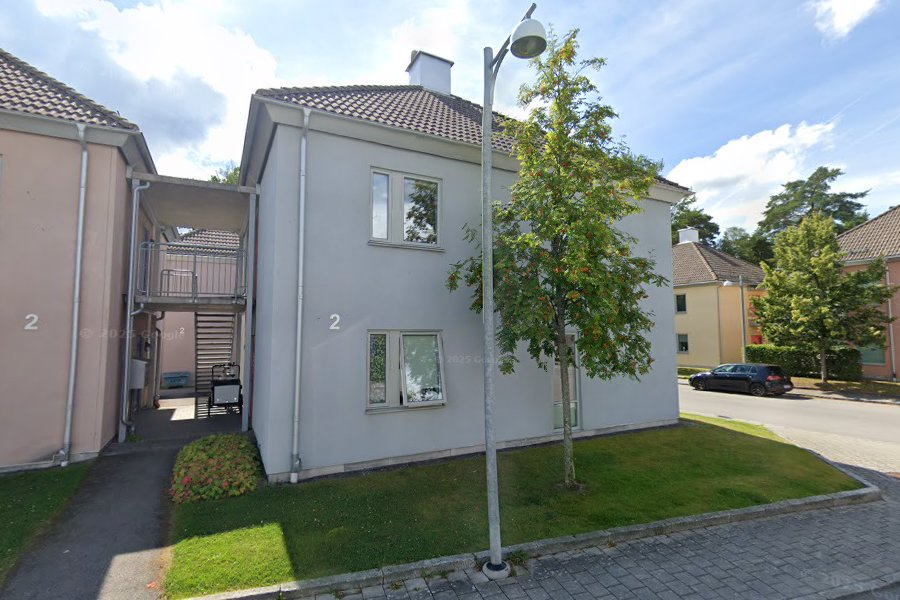
Växjö - Oktober 2024
Bostadstyp: Villa (byggd 1946)
Områdets byggperiod: 1930- och 1940-tal
Boarea: 225 m²
Uppskattat värde: 5,100,000 - 7,800,000 SEK
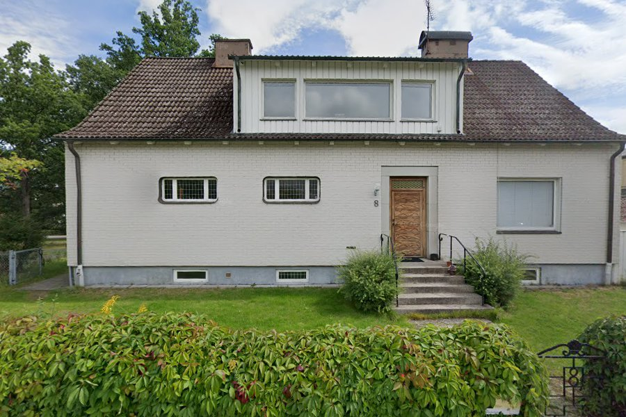
Moheda - november 2022
Bostadstyp: Villa (byggd 1910)
Områdets byggperiod: 1960- och 1970-tal
Boarea: 83 m²
Uppskattat värde: Ej tillgängligt
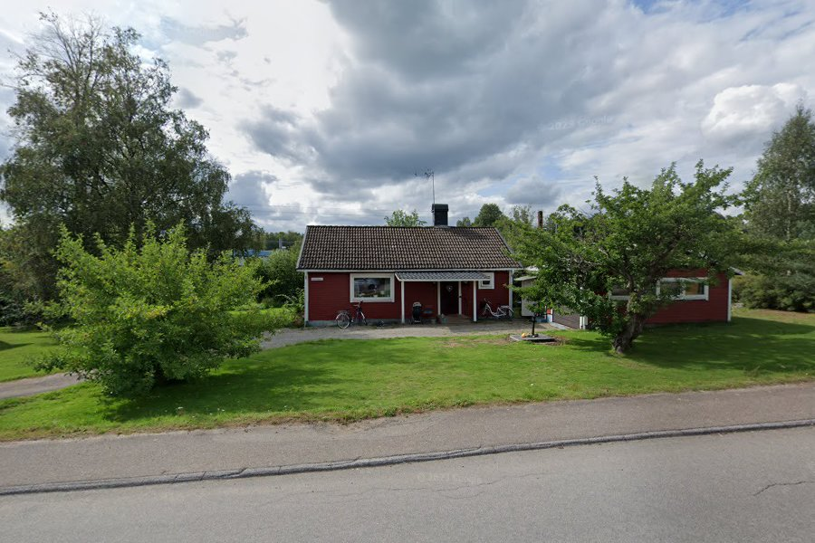
Ör - december 2021
Bostadstyp: Villa
Områdets byggperiod: 1950- och 1960-tal
Boarea: 87 m²
Uppskattat värde: Ej tillgängligt
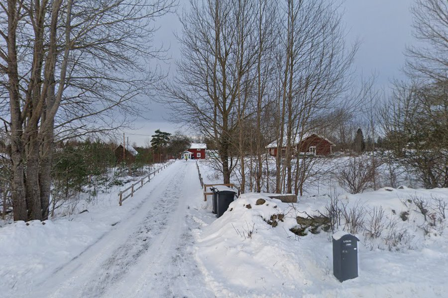
Moheda - september 2020
Bostadstyp: Villa (byggd 1947)
Områdets byggperiod: 1950- och 1960-tal
Boarea: 120 m²
Uppskattat värde: Ej tillgängligt
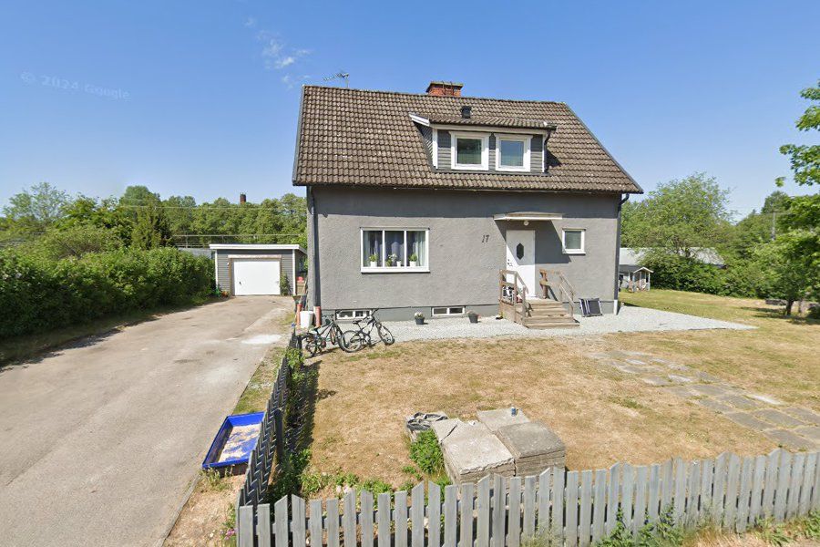
Torpsbruk - Oktober 2018
Bostadstyp: Villa (byggd 1981)
Områdets byggperiod: 1970- och 1980-tal
Boarea: 158 m²
Uppskattat värde: Ej tillgängligt
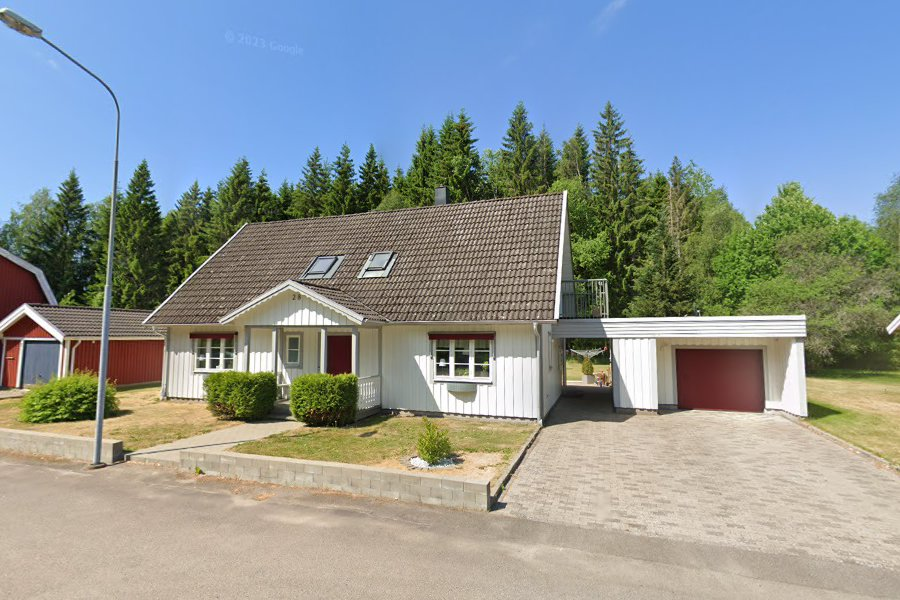
Härlöv - ? 2017
Bostadstyp: Ej tillgängligt
Områdets byggperiod: 1930- och 1940-tal
Boarea: Ej tillgängligt
Uppskattat värde: Ej tillgängligt
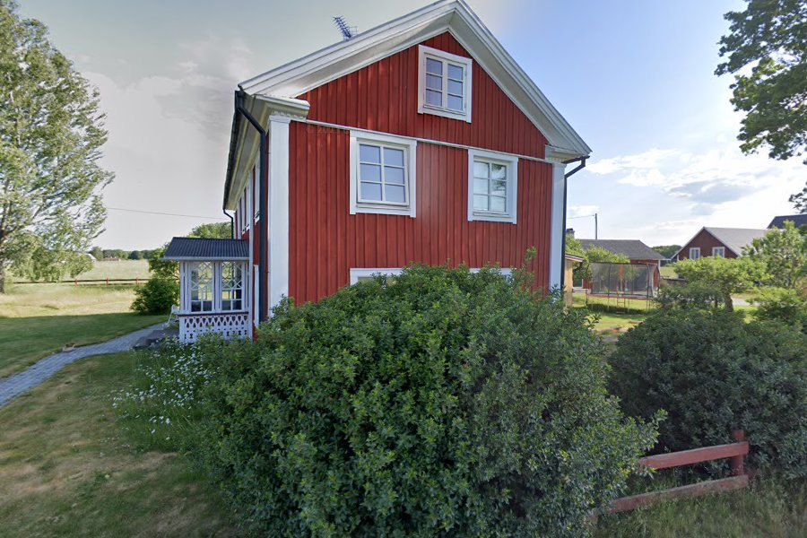
Torpsbruk - ? 2016
Bostadstyp: Villa (byggd 1933)
Områdets byggperiod: 1930- och 1950-tal
Boarea: 105 m²
Uppskattat värde: Ej tillgängligt
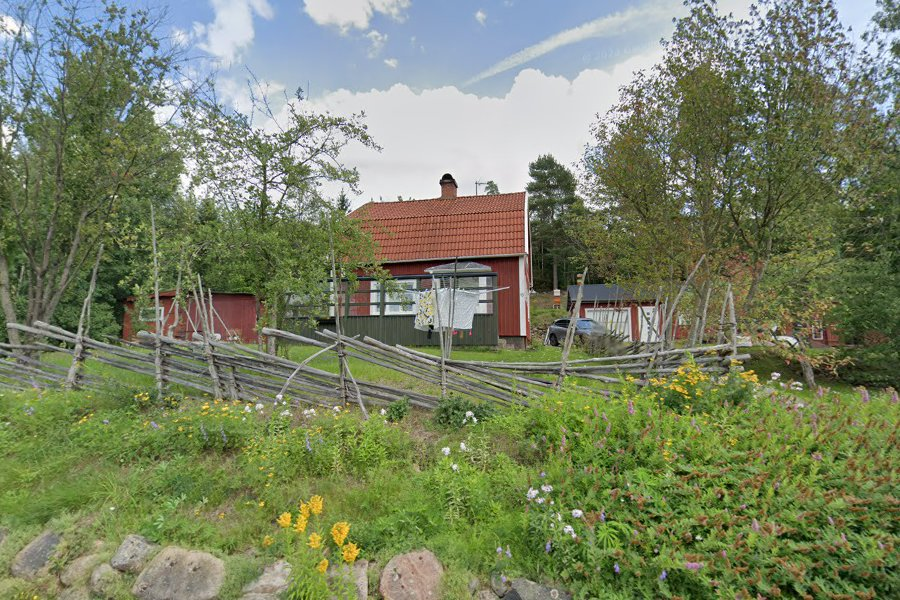
Växjö - ? 2015
Bostadstyp: Flerbostadshus
Områdets byggperiod: 1960- och 1990-tal
Boarea: Ej tillgängligt
Uppskattat värde: Ej tillgängligt
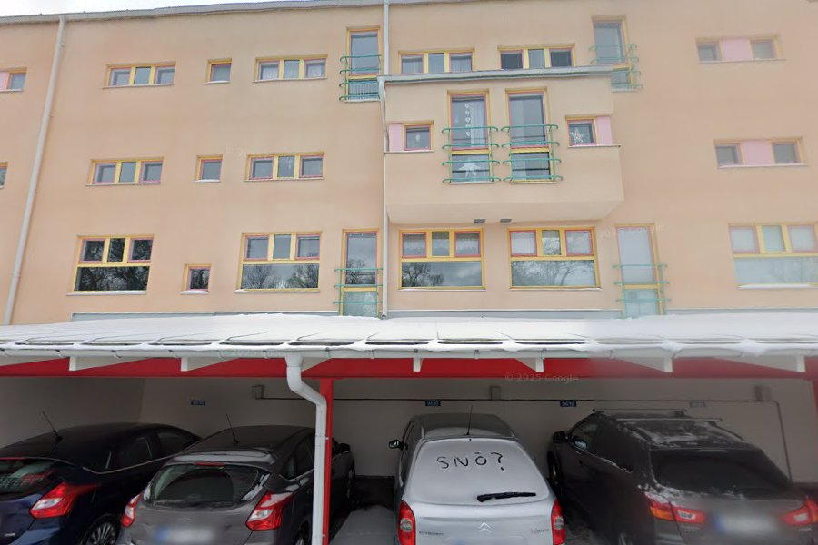
Torpsbruk - ? 2014
Bostadstyp: Villa (byggd 1933)
Områdets byggperiod: 1930- och 1950-tal
Boarea: 105 m²
Uppskattat värde: Ej tillgängligt
Moheda - ? 2013
Bostadstyp: Villa (byggd 1957)
Områdets byggperiod: 1960- och 1970-tal
Boarea: 105 m²
Uppskattat värde: 1,300,000 - 2,200,000 SEK
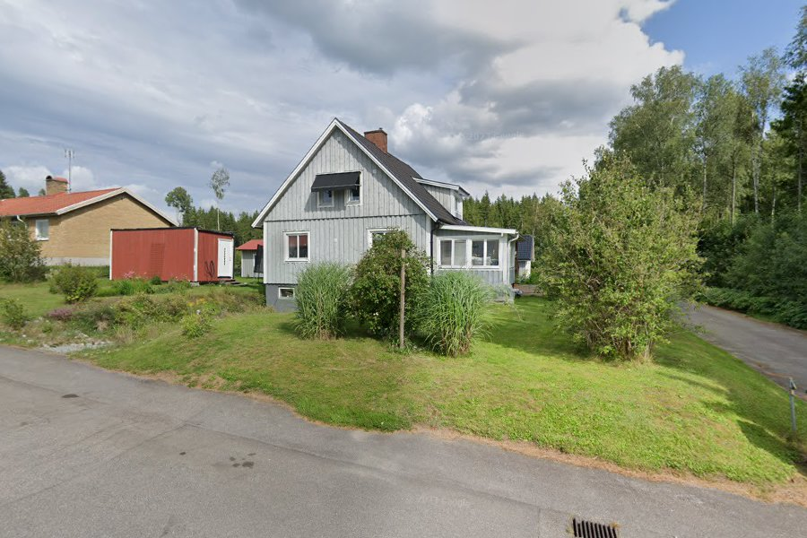